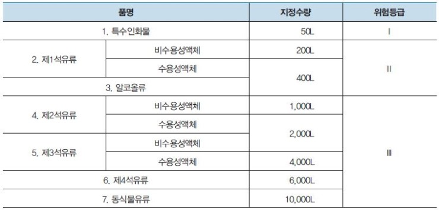

4류 위험물은 인화성 액체로 제1석유류(휘발유, 아세톤), 제2석유류(등유, 경유), 알코올류, 대통령령으로 지정한 특수인화물(이황화탄소, 디에틸에테르) 등이 있다. 대체로 물보다 가볍고 물에 녹기는 어렵다. 공기와 증기가 약간만 혼합되어 있어도 연소가 된다. 연소하한이 비교적 낮기 때문이다. 석유류의 지정수량이 200L로 정한 이유는 200L가 1드럼의 용량 때문이다.
여담으로 위험물기능사 이상의 자격증을 공부할 때 외울 품명이 더럽게도 많아 일부 수험생들은 4류 위험물을 거르고 5류 위험물로 스킵하는 경우가 있다. 그나마 쉬운 것이라면 기계와 관련한 인화성 액체는 모두 제4석유류에 속하고 동식물류는 모두 제5석유류에 속한다.

특수인화물
디에틸에테르, 이항화탄소, 아세트알테히드, 산화프로필렌,
제1석유류
아세톤, 휘발유, 콜로디온, 벤젠, 톨루엔, 초산메틸, 의산메틸, 의산에틸, 피리딘, 메틸에틸케톤, 염화아세틸, 사안화수소, 시클로헥산
알코올류
메틸알코올, 에틸알코올, 프로필알코올
제2석유류
등유, 경유, 의산, 초산, 테레핀유, 크실렌, 클로로벤젠, 스티렌, 히드라진, 부틸알코올, 아크릴산
제3석유류
중유, 클레오소트유, 글리세린, 에틸렌글리콜, 아닐린, 니트로벤젠, 니트로톨루엔, 염화벤조일, 히드라진 하이드레이트, 메타크레졸
제4석유류
윤활유(기어유, 실린더유, 엔진오일, 스핀들유, 터빈유, 모빌유), 가소제(디옥틸프산탈, 트리크레실포스테이트)
동식물류
건성유(동유, 해바라기유, 아마인유, 들기름), 반건성유(쌀겨기름, 면실유, 채종유, 옥수수기름),
불건성유(올리브유, 동백유, 피마자유, 야자유)